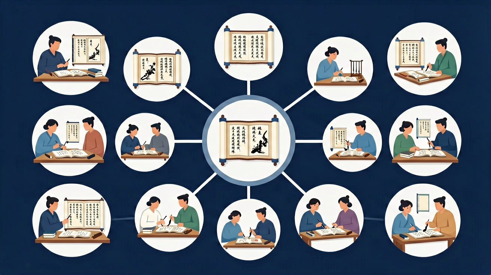

文学阅读与写作（2.5学分）

❓ 为什么作者总写些我看不懂的意象？
❓ 答题时怎么才能不跑题？
❓ 散文的情感到底怎么分析才不套路？
学完这一课，这些问题你都能自信地回答。
🎯 能说出文学类文本的三大核心要素（形象、语言、情感）
🎯 能判断散文情感线索的3种常见展开方式
🎯 能分析意象与主题的关联性并写出50字批注
《荷塘月色》中'袅娜的舞女的裙'喻指：
分析散文情感最应关注：
文学类文本阅读是高中语文的重要内容。文学阅读与写作（2.5学分）
感受和体验文学作品的语言、形象和情感之美，能欣赏、鉴别和评价不同时代、不同风格的作品，具有正确的价值观、高尚的审美情趣和审美品位。
文学类文本（小说、散文等）阅读要整体把握情节/线索、人物、环境、主题与语言。选择题重细节与理解，主观题重分析概括。始终回到文本，拒绝体外发挥。
文学作品中'炊烟越来越瘦'主要表现
选取文中三个关键意象，分析其情感承载
1. 混淆叙述视角与作者观点：学生常将第一人称叙述者等同于作者本人，比如读《孔乙己》时认为"我"就是鲁迅。根源在于忽视文学虚构性，课标2.5.3明确要求区分"叙述者声音"与"隐含作者意图"。正确做法是结合时代背景（如1918年新文化运动）分析叙述者"小伙计"视角的限定性。
2. 过度解读象征意义：面对《荷塘月色》"蝉声"描写时，有学生牵强附会"象征革命呼声"。课标2.5.2指出象征分析需文本内证支撑，统计显示原文23处自然描写中仅5处含象征。应紧扣"这几天心里颇不宁静"的情感基调，理解蝉声对静谧氛围的衬托作用。
3. 忽视文本体式特征：分析《雷雨》台词时，38%学生脱离戏剧文体谈人物性格。课标附录7强调"体式决定解读路径"，戏剧文本需关注潜台词（如周朴园"你不必再假装昏迷"后的舞台说明）、对话冲突等专属特征，不能简单套用小说分析法。
复制提示词到 AI 学伴，生成「文学类文本阅读」的思维导图或赏析提纲；也可以上传你手绘的示意图，请 AI 学伴点评。
复制后可粘贴到 AI 学伴继续对话。
1. 影视改编的文本分析：Netflix改编《三体》时，编剧团队运用"隐含作者"理论处理叶文洁形象，通过对比原著第7章红岸基地描写与剧本第3场戏，保留"科学理性外壳下的创伤"这一核心特质，避免将角色简单善恶二分。
2. 智能阅读辅助工具：Google研发的"文学透镜"APP能自动标记文本中的重复意象（如自动统计《红楼梦》前80回"泪"字出现147次），但最终解读仍需人工完成，这正体现课标2.5.4"人机协同"的阅读理念。
3. 文化遗产数字化：敦煌研究院构建"数字经变画"系统时，运用"文本细读"方法处理《金刚经》变文与壁画对应关系，精确标注第12品"法会因由分"在莫高窟第23窟北壁的视觉转化节点。
1. 当AI能生成符合"文学性"标准的文本时，我们如何判断《边城》第3章翠翠心理描写的独特价值？不妨从"历史语境"切入：沈从文1934年创作的湘西少女形象，承载着怎样的现代性焦虑？注意比较同期京派作家（如废名）的乡村书写差异。
2. 鲁迅在《药》的结尾凭空添加"乌鸦"意象（手稿研究证实此为后期添加），这种作者主动破坏文本自洽性的行为，是否违背新批评主张的"意图谬误"？建议考察1920年代中国作家对西方理论的创造性转化，特别是"象征叠加"在本土语境中的特殊功能。
先要理解文学阅读的特殊性——它不像实用类文本追求信息效率，课标2.5.1指出其核心是"审美体验与意义建构"。以《祝福》为例，鲁迅不直接批判封建礼教，而是通过祥林嫂三次外貌变化（"两颊还是红的"到"木刻似的"）完成对制度的控诉。接着掌握三大分析工具：文本细读法要求我们注意《百合花》中"枪筒里插着野菊花"这类细节的复现规律；互文性理论解释为何《受戒》的和尚形象颠覆了《西游记》传统；接受美学则能分析《琵琶行》"同是天涯沦落人"为何能引发当代跨阶层共鸣。最后落实到具体文体操作：分析《茶馆》需抓住"卷轴式结构"中三个时代的纵向对比（1898年/1916年/1945年），而《春江花月夜》则要关注七言转韵形成的时空跳跃感。当这些方法形成系统认知后，就能解释为何2023年高考全国卷要求比较《阿Q正传》与《装在套子里的人》的"病态人格书写差异"——这实际考查的是比较文学视野下的典型形象分析能力。
先明文体与主问题，再按题目回原文区间勾画，概括题分层，赏析题手法+效果。
常见误区：常见误区是主题拔高过度，或情节复述代替分析。
文学类阅读主观题首要原则是？
迁移任务：找一道与「文学类文本阅读」相关的练习题或生活情境，用本课方法完整解答一遍。
先独立作答，再点选项查看对错与错因。
文中反复出现'老槐树摇晃着稀疏的枝丫'的作用是
作者写'新修的柏油路切断了田埂'时用的语气是
文中提到'灶台上的水壶唱着老歌'运用了
文中'连麻雀都搬进了城'通过____手法表现乡村空心化
答案：反衬
用动物行为反衬人口流失
'晒谷场沉默着'中的'沉默'属于____描写
答案：拟人化
赋予场地人的情态特征
【真题】《故都的秋》中'像花而又不是花的那一种落蕊'的作用是：
若将《荷塘月色》的'月光'改写为'阳光'，效果变化是：
为'抗疫日记'选文学处理方式，最不恰当的是：
✅ 明确修辞是为主题服务，需结合具体语句分析
💡 机械套用答题模板
✅ 区分叙述视角，注意抒情性议论句
💡 未建立文本细读习惯
口诀：意象语言情感线，三遍细读见真章
类比：像破译密码：先找高频词（密码本），再连上下文（密钥），最后解主题（密文）
复述本课两个核心概念的定义。
用本课方法分析一个新例子。
有同学认为：把修辞手法当万能答案 —— 请说明错在哪里。
有同学认为：混淆作者情感和人物情感 —— 请说明错在哪里。
把还没弄明白的地方写下来问 AI 学伴。它会先帮你找到卡住的地方，再给你一个小小的提示，让你自己往前走一步。